2023-08-29
Part I: Theories of Memory Processing and Learning
Part II: Cognitive Load Theory and Course Design
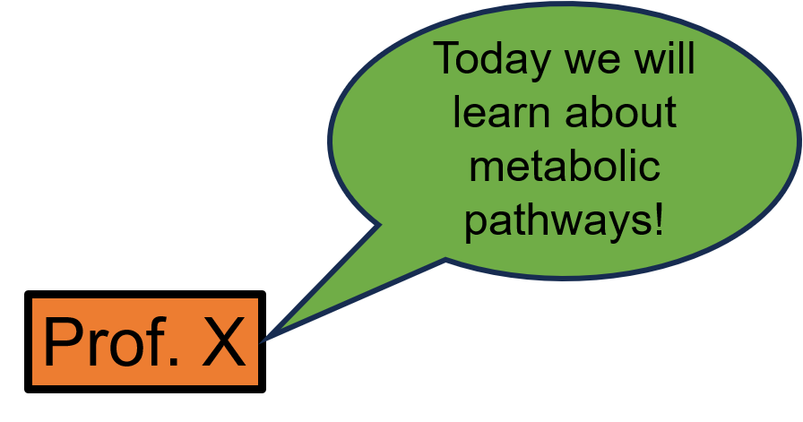
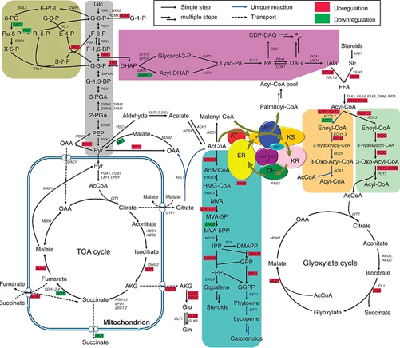
https://monicanasseri.wixsite.com/biochemical-pathways/biochemical-pathways
Describes how the human mind processes new information
3 Main Types of Cognitive Load
Innate difficulty of a task and complexity of new information.
Influenced by age and/or educational background.
Load due to poorly designed instructional material.
Distracts working memory from processing the required information.
Mental capacity used to integrate new information with existing knowledge
Effort required to learn and retain the material
Influenced by level of training (Math Professor vs 1st grader)
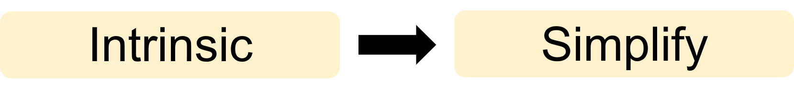 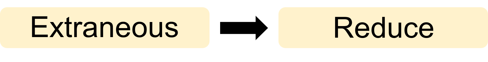 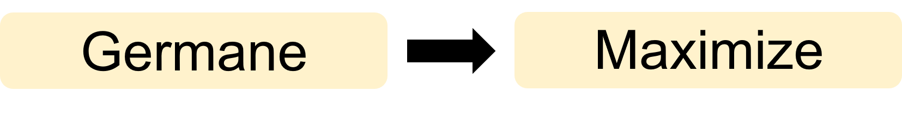
https://mcdreeamiemusings.com/blog/2019/10/15/the-good-the-bad-and-the-can-be-ugly-the-three-parts-of-cognitive-load
Try during the break: https://miku.github.io/activememory/
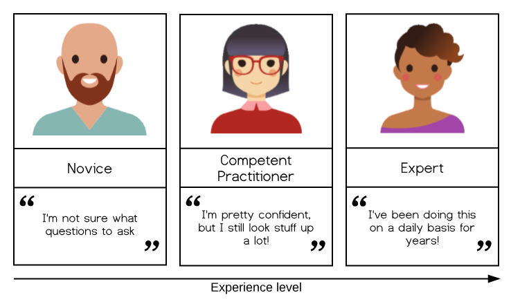
Limitations
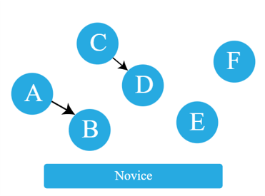 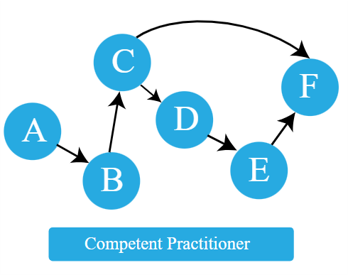 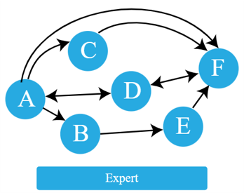
https://carpentries.github.io/instructor-training/
https://carpentries.github.io/instructor-training/
Help to identify common misconceptions and broken mental models.
Factual errors: The Capital City of Sweden is Doha.
Broken models: Motion and acceleration must always be in the same direction.
Fundamental beliefs: Some people are computational and others are not.
Example
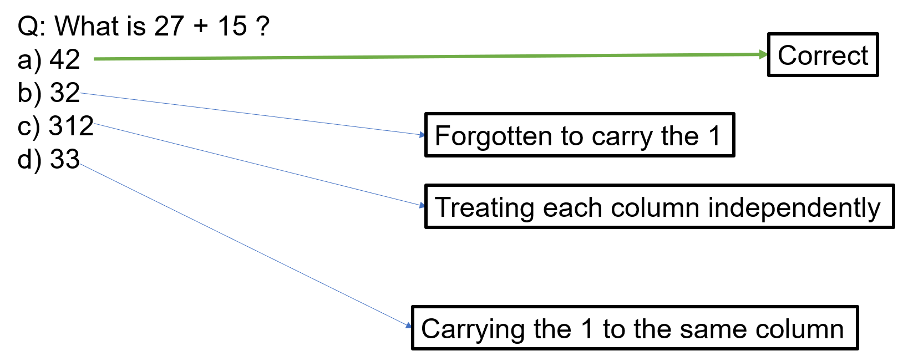Each incorrect answer has diagnostic power and will guide correction
https://carpentries.github.io/instructor-training/
Memory management
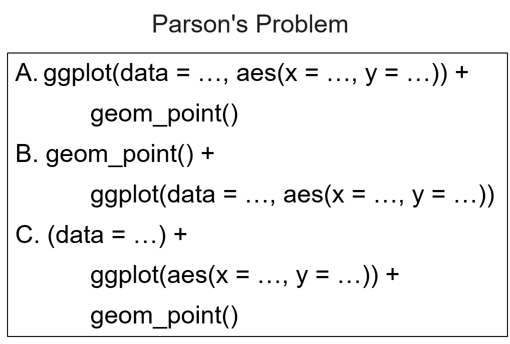https://taylorda01.weebly.com/backward-faded-maths.html
Chunking
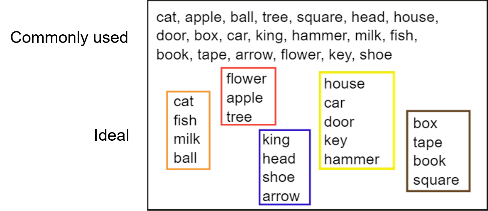https://carpentries.github.io/instructor-training/
Reduce split-attention effect
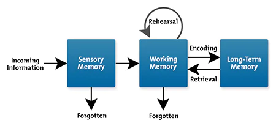
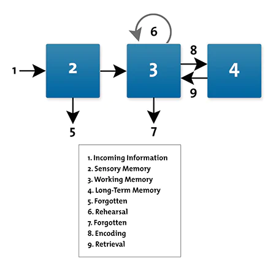
MindTools: https://www.mindtools.com/aqxwcpa/cognitive-load-theory
Encourage the use of concept maps
Example Discussion: Renewable and Non-renewable Energy Sources
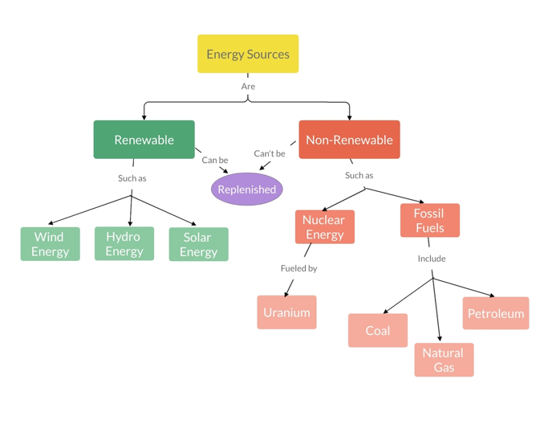
https://visme.co/blog/how-to-make-a-concept-map/
https://carpentries.github.io/instructor-training/
https://teachtogether.tech/